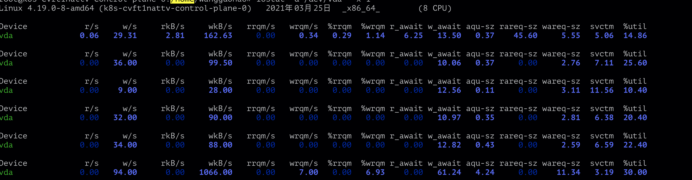

本文记录一次问题排查经历，问题简述为计算节点无法加入k8s集群
该问题的现象很直观，在计算节点上使用 kubeadm join 加入已拉起的k8s控制面失败。实际上，该问题出现了两次，两次原因并不相同。接下来将记录两次问题排查过程。
第一次加入失败 排查过程 kubeadm 报错：
1 2 3 4 5 6 7 8 9 10 11 12 13 14 15 16 17 18 19 20 21 22 23 24 25 26 27 28 29 30 31 32 33 34 35 36 37 38 39 40 41 42 43 44 45 46 47 48 49 50 51 52 53 54 55 56 57 //... [kubelet-start] Starting the kubelet [kubelet-start] Waiting for the kubelet to perform the TLS Bootstrap... I0324 16:22:47.142677 53532 kubelet.go:168] [kubelet-start] preserving the crisocket information for the node I0324 16:22:47.142698 53532 patchnode.go:30] [patchnode] Uploading the CRI Socket information "/var/run/dockershim.sock" to the Node API object "k8s-azveyyhr8j-1616569139" as an annotation [kubelet-check] Initial timeout of 40s passed. timed out waiting for the condition error uploading crisocket k8s.io/kubernetes/cmd/kubeadm/app/cmd/phases/join.runKubeletStartJoinPhase /home/jenkins/jenkins/workspace/cld-golang-almighty/src/kubernetes/_output/local/go/src/k8s.io/kubernetes/cmd/kubeadm/app/cmd/phases/join/kubelet.go:170 k8s.io/kubernetes/cmd/kubeadm/app/cmd/phases/workflow.(*Runner).Run.func1 /home/jenkins/jenkins/workspace/cld-golang-almighty/src/kubernetes/_output/local/go/src/k8s.io/kubernetes/cmd/kubeadm/app/cmd/phases/workflow/runner.go:234 k8s.io/kubernetes/cmd/kubeadm/app/cmd/phases/workflow.(*Runner).visitAll /home/jenkins/jenkins/workspace/cld-golang-almighty/src/kubernetes/_output/local/go/src/k8s.io/kubernetes/cmd/kubeadm/app/cmd/phases/workflow/runner.go:422 k8s.io/kubernetes/cmd/kubeadm/app/cmd/phases/workflow.(*Runner).Run /home/jenkins/jenkins/workspace/cld-golang-almighty/src/kubernetes/_output/local/go/src/k8s.io/kubernetes/cmd/kubeadm/app/cmd/phases/workflow/runner.go:207 k8s.io/kubernetes/cmd/kubeadm/app/cmd.NewCmdJoin.func1 /home/jenkins/jenkins/workspace/cld-golang-almighty/src/kubernetes/_output/local/go/src/k8s.io/kubernetes/cmd/kubeadm/app/cmd/join.go:170 k8s.io/kubernetes/vendor/github.com/spf13/cobra.(*Command).execute /home/jenkins/jenkins/workspace/cld-golang-almighty/src/kubernetes/_output/local/go/src/k8s.io/kubernetes/vendor/github.com/spf13/cobra/command.go:826 k8s.io/kubernetes/vendor/github.com/spf13/cobra.(*Command).ExecuteC /home/jenkins/jenkins/workspace/cld-golang-almighty/src/kubernetes/_output/local/go/src/k8s.io/kubernetes/vendor/github.com/spf13/cobra/command.go:914 k8s.io/kubernetes/vendor/github.com/spf13/cobra.(*Command).Execute /home/jenkins/jenkins/workspace/cld-golang-almighty/src/kubernetes/_output/local/go/src/k8s.io/kubernetes/vendor/github.com/spf13/cobra/command.go:864 k8s.io/kubernetes/cmd/kubeadm/app.Run /home/jenkins/jenkins/workspace/cld-golang-almighty/src/kubernetes/_output/local/go/src/k8s.io/kubernetes/cmd/kubeadm/app/kubeadm.go:50 main.main _output/local/go/src/k8s.io/kubernetes/cmd/kubeadm/kubeadm.go:25 runtime.main /home/jenkins/jenkins/tools/org.jenkinsci.plugins.golang.GolangInstallation/Go_1.14.7/src/runtime/proc.go:203 runtime.goexit /home/jenkins/jenkins/tools/org.jenkinsci.plugins.golang.GolangInstallation/Go_1.14.7/src/runtime/asm_amd64.s:1373 error execution phase kubelet-start k8s.io/kubernetes/cmd/kubeadm/app/cmd/phases/workflow.(*Runner).Run.func1 /home/jenkins/jenkins/workspace/cld-golang-almighty/src/kubernetes/_output/local/go/src/k8s.io/kubernetes/cmd/kubeadm/app/cmd/phases/workflow/runner.go:235 k8s.io/kubernetes/cmd/kubeadm/app/cmd/phases/workflow.(*Runner).visitAll /home/jenkins/jenkins/workspace/cld-golang-almighty/src/kubernetes/_output/local/go/src/k8s.io/kubernetes/cmd/kubeadm/app/cmd/phases/workflow/runner.go:422 k8s.io/kubernetes/cmd/kubeadm/app/cmd/phases/workflow.(*Runner).Run /home/jenkins/jenkins/workspace/cld-golang-almighty/src/kubernetes/_output/local/go/src/k8s.io/kubernetes/cmd/kubeadm/app/cmd/phases/workflow/runner.go:207 k8s.io/kubernetes/cmd/kubeadm/app/cmd.NewCmdJoin.func1 /home/jenkins/jenkins/workspace/cld-golang-almighty/src/kubernetes/_output/local/go/src/k8s.io/kubernetes/cmd/kubeadm/app/cmd/join.go:170 k8s.io/kubernetes/vendor/github.com/spf13/cobra.(*Command).execute /home/jenkins/jenkins/workspace/cld-golang-almighty/src/kubernetes/_output/local/go/src/k8s.io/kubernetes/vendor/github.com/spf13/cobra/command.go:826 k8s.io/kubernetes/vendor/github.com/spf13/cobra.(*Command).ExecuteC /home/jenkins/jenkins/workspace/cld-golang-almighty/src/kubernetes/_output/local/go/src/k8s.io/kubernetes/vendor/github.com/spf13/cobra/command.go:914 k8s.io/kubernetes/vendor/github.com/spf13/cobra.(*Command).Execute /home/jenkins/jenkins/workspace/cld-golang-almighty/src/kubernetes/_output/local/go/src/k8s.io/kubernetes/vendor/github.com/spf13/cobra/command.go:864 k8s.io/kubernetes/cmd/kubeadm/app.Run /home/jenkins/jenkins/workspace/cld-golang-almighty/src/kubernetes/_output/local/go/src/k8s.io/kubernetes/cmd/kubeadm/app/kubeadm.go:50 main.main _output/local/go/src/k8s.io/kubernetes/cmd/kubeadm/kubeadm.go:25 runtime.main /home/jenkins/jenkins/tools/org.jenkinsci.plugins.golang.GolangInstallation/Go_1.14.7/src/runtime/proc.go:203 runtime.goexit /home/jenkins/jenkins/tools/org.jenkinsci.plugins.golang.GolangInstallation/Go_1.14.7/src/runtime/asm_amd64.s:1373
初看报错，以为是kubelet使用的dockershim.sock有误，然而查看kubelet日志，发现并不如此。
kubelet日志如下：
cld-baremetal2-1007.i.nease.net kubelet[239987]: E0324 20:01:16.875779 239987 event.go:263] Server rejected event '&v1.Event{TypeMeta:v1.TypeMeta{Kind:"", APIVersion:""}, ObjectMeta:v1.ObjectMeta{Name:"k8s-azveyyhr8j-1616569139.166f45823a45567e", GenerateName:"", Namespace:"default", SelfLink:"", UID:"", ResourceVersion:"", Generation:0, CreationTimestamp:v1.Time{Time:time.Time{wall:0x0, ext:0, loc:(*time.Location)(nil)}}, DeletionTimestamp:(*v1.Time)(nil), DeletionGracePeriodSeconds:(*int64)(nil), Labels:map[string]string(nil), Annotations:map[string]string(nil), OwnerReferences:[]v1.OwnerReference(nil), Finalizers:[]string(nil), ClusterName:"", ManagedFields:[]v1.ManagedFieldsEntry(nil)}, InvolvedObject:v1.ObjectReference{Kind:"Node", Namespace:"", Name:"k8s-azveyyhr8j-1616569139", UID:"k8s-azveyyhr8j-1616569139", APIVersion:"", ResourceVersion:"", FieldPath:""}, Reason:"NodeHasSufficientMemory", Message:"Node k8s-azveyyhr8j-1616569139 status is now: NodeHasSufficientMemory", Source:v1.EventSource{Component:"kubelet", Host:"k8s-azveyyhr8j-1616569139"}, FirstTimestamp:v1.Time{Time:time.Time{wall:0xc00ee8543427367e, ext:20778571567, loc:(*time.Location)(0x6db9880)}}, LastTimestamp:v1.Time{Time:time.Time{wall:0xc00ee8543427367e, ext:20778571567, loc:(*time.Location)(0x6db9880)}}, Count:1, Type:"Normal", EventTime:v1.MicroTime{Time:time.Time{wall:0x0, ext:0, loc:(*time.Location)(nil)}}, Series:(*v1.EventSeries)(nil), Action:"", Related:(*v1.ObjectReference)(nil), ReportingController:"", ReportingInstance:""}': 'the server was unable to return a response in the time allotted, but may still be processing the request (post events)' (will not retry!)
发现了kubelet发送自身节点信息的post请求并未及时被apiserver处理。再调高kubeadm日志等级仔细看kubeadm报错，认识到其实是kubeadm get node时失败，无法给node添加annotation造成的。
接下来看kube-apisever的日志：
1 2 3 4 5 6 7 8 9 10 11 12 13 14 15 16 17 18 19 20 21 22 23 24 25 26 27 28 29 30 31 32 33 34 35 36 37 38 39 40 41 42 43 44 45 I0325 00:44:21.939539 1 httplog.go:90] POST /api/v1/nodes: (1m0.00020487s) 504 goroutine 6287634 [running]: k8s.io/kubernetes/vendor/k8s.io/apiserver/pkg/server/httplog.(*respLogger).recordStatus(0xc0076cd340, 0x1f8) /Users/guohao/workspace/go/src/k8s.io/kubernetes/_output/local/go/src/k8s.io/kubernetes/vendor/k8s.io/apiserver/pkg/server/httplog/httplog.go:217 +0xc8 k8s.io/kubernetes/vendor/k8s.io/apiserver/pkg/server/httplog.(*respLogger).WriteHeader(0xc0076cd340, 0x1f8) /Users/guohao/workspace/go/src/k8s.io/kubernetes/_output/local/go/src/k8s.io/kubernetes/vendor/k8s.io/apiserver/pkg/server/httplog/httplog.go:196 +0x35 k8s.io/kubernetes/vendor/k8s.io/apiserver/pkg/server/filters.(*baseTimeoutWriter).timeout(0xc00e12aa20, 0xc00c1505a0) /Users/guohao/workspace/go/src/k8s.io/kubernetes/_output/local/go/src/k8s.io/kubernetes/vendor/k8s.io/apiserver/pkg/server/filters/timeout.go:241 +0xb0 k8s.io/kubernetes/vendor/k8s.io/apiserver/pkg/server/filters.(*timeoutHandler).ServeHTTP(0xc0068bae00, 0x4df1980, 0xc0076cd340, 0xc00e110200) /Users/guohao/workspace/go/src/k8s.io/kubernetes/_output/local/go/src/k8s.io/kubernetes/vendor/k8s.io/apiserver/pkg/server/filters/timeout.go:141 +0x2db k8s.io/kubernetes/vendor/k8s.io/apiserver/pkg/server/filters.WithWaitGroup.func1(0x4df1980, 0xc0076cd340, 0xc00e110100) /Users/guohao/workspace/go/src/k8s.io/kubernetes/_output/local/go/src/k8s.io/kubernetes/vendor/k8s.io/apiserver/pkg/server/filters/waitgroup.go:47 +0x113 net/http.HandlerFunc.ServeHTTP(0xc007486480, 0x4df1980, 0xc0076cd340, 0xc00e110100) /usr/local/Cellar/go/1.14.1/libexec/src/net/http/server.go:2012 +0x44 k8s.io/kubernetes/vendor/k8s.io/apiserver/pkg/endpoints/filters.WithRequestInfo.func1(0x4df1980, 0xc0076cd340, 0xc00e110000) /Users/guohao/workspace/go/src/k8s.io/kubernetes/_output/local/go/src/k8s.io/kubernetes/vendor/k8s.io/apiserver/pkg/endpoints/filters/requestinfo.go:39 +0x274 net/http.HandlerFunc.ServeHTTP(0xc0074864b0, 0x4df1980, 0xc0076cd340, 0xc00e110000) /usr/local/Cellar/go/1.14.1/libexec/src/net/http/server.go:2012 +0x44 k8s.io/kubernetes/vendor/k8s.io/apiserver/pkg/server/httplog.WithLogging.func1(0x4de4980, 0xc00aa19a40, 0xc00ed20900) /Users/guohao/workspace/go/src/k8s.io/kubernetes/_output/local/go/src/k8s.io/kubernetes/vendor/k8s.io/apiserver/pkg/server/httplog/httplog.go:89 +0x2b6 net/http.HandlerFunc.ServeHTTP(0xc0068bae20, 0x4de4980, 0xc00aa19a40, 0xc00ed20900) /usr/local/Cellar/go/1.14.1/libexec/src/net/http/server.go:2012 +0x44 k8s.io/kubernetes/vendor/k8s.io/apiserver/pkg/server/filters.withPanicRecovery.func1(0x4de4980, 0xc00aa19a40, 0xc00ed20900) /Users/guohao/workspace/go/src/k8s.io/kubernetes/_output/local/go/src/k8s.io/kubernetes/vendor/k8s.io/apiserver/pkg/server/filters/wrap.go:51 +0xe6 net/http.HandlerFunc.ServeHTTP(0xc0068bae40, 0x4de4980, 0xc00aa19a40, 0xc00ed20900) /usr/local/Cellar/go/1.14.1/libexec/src/net/http/server.go:2012 +0x44 k8s.io/kubernetes/vendor/k8s.io/apiserver/pkg/server.(*APIServerHandler).ServeHTTP(0xc0074864e0, 0x4de4980, 0xc00aa19a40, 0xc00ed20900) /Users/guohao/workspace/go/src/k8s.io/kubernetes/_output/local/go/src/k8s.io/kubernetes/vendor/k8s.io/apiserver/pkg/server/handler.go:189 +0x51 net/http.serverHandler.ServeHTTP(0xc00b9f81c0, 0x4de4980, 0xc00aa19a40, 0xc00ed20900) /usr/local/Cellar/go/1.14.1/libexec/src/net/http/server.go:2807 +0xa3 net/http.initALPNRequest.ServeHTTP(0x4df8880, 0xc008468750, 0xc00ac9ea80, 0xc00b9f81c0, 0x4de4980, 0xc00aa19a40, 0xc00ed20900) /usr/local/Cellar/go/1.14.1/libexec/src/net/http/server.go:3381 +0x8d k8s.io/kubernetes/vendor/golang.org/x/net/http2.(*serverConn).runHandler(0xc00af4ec00, 0xc00aa19a40, 0xc00ed20900, 0xc00e9bb9a0) /Users/guohao/workspace/go/src/k8s.io/kubernetes/_output/local/go/src/k8s.io/kubernetes/vendor/golang.org/x/net/http2/server.go:2149 +0x8b created by k8s.io/kubernetes/vendor/golang.org/x/net/http2.(*serverConn).processHeaders /Users/guohao/workspace/go/src/k8s.io/kubernetes/_output/local/go/src/k8s.io/kubernetes/vendor/golang.org/x/net/http2/server.go:1883 +0x4e1 logging error output: "{\"metadata\":{},\"status\":\"Failure\",\"message\":\"Timeout: request did not complete within 1m0s\",\"reason\":\"Timeout\",\"details\":{},\"code\":504}\n" [kubelet/v1.17.4 (linux/amd64) kubernetes/c77d808 10.212.200.153:54436] E0325 00:44:21.939634 1 status.go:71] apiserver received an error that is not an metav1.Status: http2.StreamError{StreamID:0x2b, Code:0x0, Cause:error(nil)} E0325 00:44:21.939715 1 writers.go:105] apiserver was unable to write a JSON response: http: Handler timeout E0325 00:44:21.940775 1 status.go:71] apiserver received an error that is not an metav1.Status: &errors.errorString{s:"http: Handler timeout"} E0325 00:44:21.941866 1 writers.go:118] apiserver was unable to write a fallback JSON response: http: Handler timeout I0325 00:44:21.942969 1 trace.go:116] Trace[1159185362]: "Create" url:/api/v1/nodes,user-agent:kubelet/v1.17.4 (linux/amd64) kubernetes/c77d808,client:10.212.200.153 (started: 2021-03-25 00:43:21.939648409 +0000 UTC m=+53607.307364629) (total time: 1m0.003294577s): Trace[1159185362]: [1m0.003294577s] [1m0.003294577s] END
发现apiserver处理/api/v1/nodes请求超时，返回504错误。超时问题与性能有关，最容易想到的是与apiserver紧密相关的etcd性能是否出现了问题。
该集群中的etcd是以pod形式部署在master节点上的，通过kubectl logs查看etcd日志,发现出现大量的read-only range request "..." took too long (xxxms) to execute , 似乎是etcd性能出现了问题，执行一次操作需要上百ms。
查看宿主机上的io性能，根据w_await字段发现磁盘的写速率很慢，相比线上正常集群相差百倍。

排查结论 由于宿主磁盘性能太差，导致etcd读写数据过慢，apisever处理计算节点上kubelet 发送的post请求超时。
第二次加入失败 更换宿主的磁盘后，解决了etcd的问题以及节点加入集群问题。但过了几天后又出现了相同的问题。
排查过程 本次问题出现时，apiserver并没有504的报错，etcd也显示正常。kubelet 不断报错 node "k8s-6nvyddfp63-1617336023" not found,节点找不到。
报错信息有限，开始艰难的调试排错之路，得到以下现象。
绕过lbc，计算节点kubelet直接访问master，可以成功。
使用lbc，重启master，可以成功，但经过一段时间后，重新加入的话会失败。
分别在master、node上进行抓包分析。master上数据包都正常，node上出现一些TCP DUP ACK，初步判断是lbc数据包没有返回，导致数据包重传。
结合1和3，该集群拓扑下的连通性应如图所示，蓝色代表正常，红色代表数据包有误，不返回。
对于第二点，比较困惑，由于无法对机器初始化后有进行的操作具体化，只能从网络的角度比较了下重启前后的iptables。此时发现了问题的关键。
机器重启后k8s相关的iptables规则清空，过了一段时间后kube-proxy启动，才将机器上的规则补充完毕。此时把问题聚焦在iptables，感觉master上的iptables有将数据包转发丢的嫌疑。逐条规则看，发现iptables中有一条请求重定向到lbc地址的规则，对应的svc是kubernetes svc，它的ClusterIP设置的就是lbc的地址。
排查结论 真相大白，post请求从node出来后，经过lbc到达master节点，再由master的iptables规则转发到lbc上，lbc转发回realserver也就是master上，形成了闭环，导致请求无法返回给node，节点注册失败，那也就无法加入至k8s集群当中。